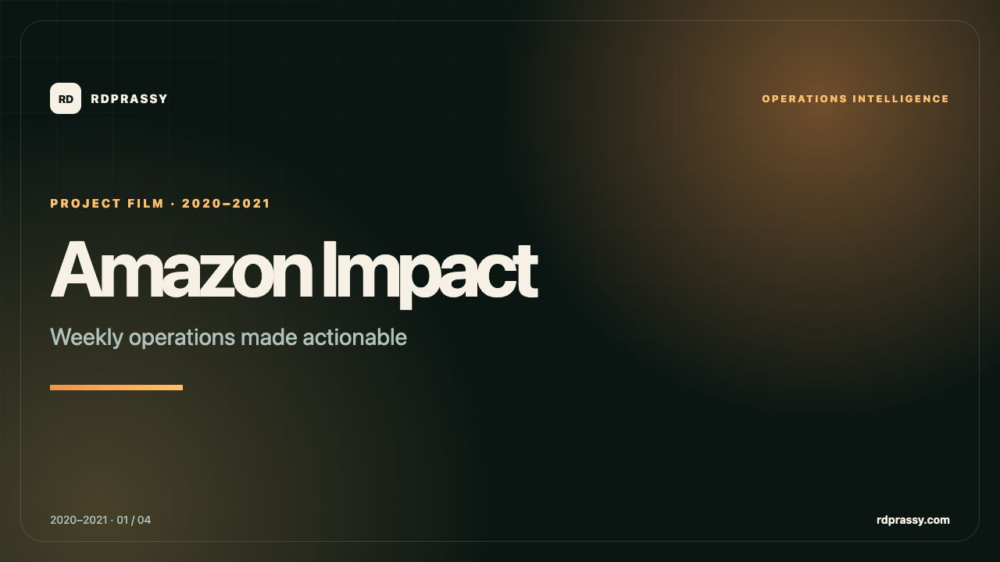

Live
AlignIQ
AI-assisted requirements and delivery alignment with evidence-backed gap reporting.
Read the product story ↗Live public products alongside case studies spanning AI, Web3, leadership insight, cloud maintenance, enterprise analytics, insurance, platform services, and biometric research.
These case studies state verified delivered capabilities and operational results. Internal business metrics are not published here, so no private or unverified numbers have been invented.
A visual companion to this project archive, covering live products, applied AI, cloud operations, enterprise platforms, insurance, and biometric research.

Fresh production snapshots, direct source links, and deeper product narratives make the current building work as visible as the professional history.
AI-assisted requirements and delivery alignment with evidence-backed gap reporting.
Read the product story ↗
A no-code ERC-721 launchpad with a publicly verifiable Monad Testnet contract.
Read the product story ↗
A focused MetaMask and address-balance utility with resilient RPC configuration.
Read the product story ↗A public-safe flagship case study connecting Retail360 decision support, a document RAG workflow, and multi-agent pipeline triage to evaluation and operational controls.
AI-assisted analytics supporting approximately 50 stakeholders across 5+ retail accounts.
Approximately 1,500 indexed documents and 300+ reported monthly questions.
Monitoring across 20+ pipelines with approximately 50 reported monthly failure triages.
An internal application designed to help leadership understand weekly operations and act on the signal instead of assembling it manually.
Weekly operational reviews need a consistent view of data that decision-makers can access quickly and trust.
Developed application workflows using AWS Lambda, DynamoDB, and React to turn operational data into usable leadership insight.
Handled high-severity incidents and carried fixes through root-cause resolution, improving the product beyond the immediate recovery.
Gave leadership a repeatable weekly operational view while strengthening the application through durable incident fixes.
A scheduling and audit system for stakeholders coordinating maintenance updates across Oracle products.
Product maintenance changes need controlled scheduling, clear stakeholder visibility, and a trustworthy historical record.
Developed full-stack flows with Spring Boot and React in TypeScript, connecting business scheduling to durable backend models.
Introduced models that preserved the history of changes, creating an auditable trail rather than only the latest state.
Connected maintenance scheduling with persistent change history so stakeholders could coordinate updates and review what changed over time.
Tools that helped customers create, run, and provision analytical functions across desktop and cloud environments.
Built capabilities in an Eclipse Rich Client Platform IDE using plugins and fragments for creating and executing analytical functions.
Developed a Python Django microservice from scratch to install analytical functions as customers provisioned Vantage clusters.
Developer experience and platform automation are two sides of the same product: one defines what is possible, the other makes it repeatable.
Supported both creation and execution of analytical functions, then automated their installation as Vantage clusters were provisioned.
A calculation system for generating insurance premiums on demand, supported by a more dependable build process.
Implemented business logic that generated insurance premiums dynamically from policy and customer inputs.
Automated the application’s build system to improve repeatability and reduce manual release friction.
In regulated business systems, maintainability and traceability are product features—not engineering afterthoughts.
Delivered on-demand premium calculation logic and a repeatable build workflow for a regulated business application.
Microservice contribution inside an enterprise application platform, supported by Pega and Oracle Cloud architecture learning.
Contributed to a microservice for the Pega platform and worked within its broader enterprise application ecosystem.
Applied Pega system architecture concepts alongside Oracle Cloud foundations and architecture knowledge.
Platform work rewards clean contracts, strong conventions, and empathy for the teams building on top of your service.
Added a microservice contribution within a broader enterprise platform while working to the conventions that make shared services dependable.
A final-year research project for distinguishing a genuine palmprint from an impostor through segmentation, feature extraction, and distance-based matching.
Used Particle Swarm Optimization to isolate the useful palmprint region for downstream analysis.
Applied Gabor filters to transform visual ridge patterns into comparable feature information.
Used Euclidean distance to compare a candidate palmprint with the registered sample and classify the result.
Completed an end-to-end biometric research pipeline spanning region isolation, feature extraction, and candidate classification.
My GitHub profile contains 26 public repositories, with pinned work across full-stack development, competitive programming, reflections, Kubernetes, and this portfolio.
I can speak in more depth about architecture choices and lessons where confidentiality allows.